СП 435.1325800.2018 «Конструкции бетонные и железобетонные монолитные. Правила п»
О документе: разработчики, утверждение, регистрация, ключевые слова
СВОД ПРАВИЛ
СП 435.1325800.2018
Издание официальное
1 ИСПОЛНИТЕЛЬ -АО «НИЦ «Строительство» -Научноисследовательский, проектно-конструкторский и технологический институт бетона и железобетона (НИИЖБ) им. А.А. Гвоздева
2 ВНЕСЕН Техническим комитетом по стандартизации ТК 465 «Строительство»
3 ПОДГОТОВЛЕН к утверждению Департаментом градостроительной деятельности и архитектуры Министерства строительства и жилищнокоммунального хозяйства Российской Федерации (Минстрой России)
4 УТВЕРЖДЕН приказом Министерства строительства и жилищнокоммунального хозяйства Российской Федерации от 26 ноября 2018 г. № 746/пр и введен в действие с 27 мая 2019 г.
5 ЗАРЕГИСТРИРОВАН Федеральным агентством по техническому регулированию и метрологии (Росстандарт)
В случае пересмотра (замены) или отмены настоящего свода правил соответствующее уведомление будет опубликовано в установленном порядке. Соответствующая информация, уведомление и тексты размещаются также в информационной системе общего пользования - на официальном сайте разработчика (Минстрой России) в сети Интернет
© Минстрой России, 2018
Настоящий нормативный документ не может быть полностью или частично воспроизведен, тиражирован и распространен в качестве официального издания на территории Российской Федерации без разрешения Минстроя России
Дата введения - 2019-05-27
УДК ОКС 91.200
Ключевые слова: конструкции монолитные бетонные, конструкции монолитные железобетонные, технические требования, производство работ, правила, методы контроля
ИСПОЛНИТЕЛЬ
Руководитель организации-разработчика АО «НИЦ «Строительство»
Генеральный директор АО «НИЦ «Строительство» \_\_\_\_\_\_\_\_\_\_\_\_\_\_\_\_\_\_\_\_ А.В. Кузьмин
Руководитель разработки
Директор НИИЖБ им. А.А. Гвоздева, д.т.н \_\_\_\_\_\_\_\_\_\_\_\_\_\_\_\_\_\_\_\_\_ А.Н. Давидюк
Заведующий лабораторией Технологии бетонов \_\_\_\_\_\_\_\_\_\_\_\_\_\_\_\_\_\_\_\_\_ С.Г. Зимин
Заведующий лабораторией Коррозии и долговечности бетонных и железобетонных конструкций, д.т.н \_\_\_\_\_\_\_\_\_\_\_\_\_\_\_\_\_\_\_\_\_ В.Ф. Степанова
Ст. научный сотрудник лаборатории Технологии бетонов, к.т.н \_\_\_\_\_\_\_\_\_\_\_\_\_\_\_\_\_\_\_\_\_ С.С. Жоробаев
Введение
6 ВВЕДЕН ВПЕРВЫЕ
Настоящий свод правил разработан в соответствии с требованиями Федерального закона от 30 декабря 2009 г. № 384-ФЗ «Технический регламент о безопасности зданий и сооружений».
Настоящий свод правил разработан авторским коллективом АО «НИЦ «Строительство» - НИИЖБ им. А.А. Гвоздева (д-р техн. наук В.Ф. Степанова ; канд. техн. наук М.И. Бруссер , канд. техн. наук С.С. Жоробаев , канд. техн. наук В.Н.Строцкий , С.Г. Зимин , А.В. Анцибор , С.Н. Захарчук ) .
| [1] | Федеральный закон от 29 декабря 2004 г. № 190-ФЗ «Градостроительный кодекс Российской Федерации» | Федеральный закон от 29 декабря 2004 г. № 190-ФЗ «Градостроительный кодекс Российской Федерации» |
|---|---|---|
| [2] | ВСН 56-97 | Проектирование и основные положения технологий производства фибробетонных конструкций |
| [3] | РТМ-17-02-2003 | Руководящие технические материалы по проектированию и изготовлению сталефибробетонных конструкций на фибре, резаной из листа |
| [4] | Приказ Федеральной службы по экологическому, технологическому и атомному надзору от 12 ноября 2013 г. №533 «Об утверждении Федеральных норм и правил в области промышленной безопасности «Правила безопасности опасных производственных объектов, на которых используются подъемные сооружения» (зарегистрирован в Министерстве юстиции Российской Федерации 31 декабря 2013 г., регистрационный №30992) | Приказ Федеральной службы по экологическому, технологическому и атомному надзору от 12 ноября 2013 г. №533 «Об утверждении Федеральных норм и правил в области промышленной безопасности «Правила безопасности опасных производственных объектов, на которых используются подъемные сооружения» (зарегистрирован в Министерстве юстиции Российской Федерации 31 декабря 2013 г., регистрационный №30992) |
| [5] | РД-11-06-2007 | Методические рекомендации о порядке разработки проектов производства работ грузоподъемными машинами и технологических карт погрузочно- разгрузочных работ |
| [6] | РД-11-05-2007 | Порядок ведения общего и (или) специального журнала учета выполнения работ при строительстве, реконструкции, капитальном ремонте объектов капитального строительства |
| [7] | РД-11-02-2006 | Требования к составу и порядку ведения исполнительной документации при строительстве, реконструкции, капитальном ремонте объектов капитального строительства и требования, предъявляемые к актам освидетельствования работ, конструкций, участков сетей инженерно-технического обеспечения |
| [8] | СНиП 12-03-2001 | Безопасность труда в строительстве. Часть 1. Общие требования |
1Область применения
2Нормативные ссылки
- В настоящем своде правил использованы нормативные ссылки на следующие документы:
ГОСТ 3282-74 Проволока стальная низкоуглеродистая общего назначения. Технические условия
ГОСТ 5802-86 Растворы строительные. Методы испытаний
ГОСТ 6727-80 Проволока из низкоуглеродистой стали холоднотянутая для армирования железобетонных конструкций. Технические условия
ГОСТ 7473-2010 Смеси бетонные. Технические условия
- ГОСТ 7566-94 Металлопродукция. Приемка, маркировка, упаковка, транспортирование и хранение
ГОСТ 8478-81 Сетки сварные для железобетонных конструкций. Технические условия
ГОСТ 10060-2012 Бетоны. Методы определения морозостойкости
ГОСТ 10178-85 Портландцемент и шлакопортландцемент. Технические условия
ГОСТ 10180-2012 Бетоны. Методы определения прочности по контрольным образцам
ГОСТ 10181-2014 Смеси бетонные. Методы испытаний
ГОСТ 10922-2012 Арматурные и закладные изделия, их сварные, вязаные и механические соединения для железобетонных конструкций. Общие технические условия
Правила производства и приемки работ
Constructions of concrete and reinforced concrete monolithic. Rules of production and acceptance of work
ГОСТ 12730.3-78 Бетоны. Метод определения водопоглощения
ГОСТ 12730.5-84 Бетоны. Методы определения водонепроницаемости
ГОСТ 13087-81 Бетоны. Методы определения истираемости
ГОСТ 14098-2014 Соединения сварные арматуры и закладных изделий железобетонных конструкций. Типы, конструкции и размеры
ГОСТ 15467-79 Управление качеством продукции. Основные понятия. Термины и определения
ГОСТ 17624-2012 Бетоны. Ультразвуковой метод определения прочности
ГОСТ 18105-2010 Бетоны. Правила контроля и оценки прочности бетона
ГОСТ 22266-2013 Цементы сульфатостойкие. Технические условия
ГОСТ 22690-2015 Бетоны. Определение прочности механическими методами неразрушающего контроля
ГОСТ 23279-2012 Сетки арматурные сварные для железобетонных конструкций и изделий. Общие технические условия
ГОСТ 23616-79 Система обеспечения точности геометрических параметров в строительстве. Контроль точности
ГОСТ 23732-2011 Вода для бетонов и строительных растворов. Технические условия
ГОСТ 24211-2008 Добавки для бетонов и строительных растворов. Общие технические условия
ГОСТ 25820-2014 Бетоны легкие. Технические условия
ГОСТ 26633-2015 Бетоны тяжелые и мелкозернистые. Технические условия
ГОСТ 27006-86 Бетоны. Правила подбора состава
ГОСТ 28570-90 Бетоны. Методы определения прочности по образцам, отобранным из конструкций
ГОСТ 30459-2008 Добавки для бетонов и строительных растворов. Определение и оценка эффективности
ГОСТ 30515-2013 Цементы. Общие технические условия
ГОСТ 31108-2016 Цементы общестроительные. Технические условия
ГОСТ 31189-2015 Смеси сухие строительные. Классификация
ГОСТ 31356-2007 Смеси сухие строительные на цементном вяжущем.
Методы испытаний
ГОСТ 31357-2007 Смеси сухие строительные на цементном вяжущем. Общие технические условия
ГОСТ 31383-2008 Защита бетонных и железобетонных конструкций от коррозии. Методы испытаний
ГОСТ 31384-2017 Защита бетонных и железобетонных конструкций от коррозии. Общие технические требования
ГОСТ 31914-2012 Бетоны высокопрочные тяжелые и мелкозернистые для монолитных конструкций. Правила контроля и оценки качества
ГОСТ 31937-2011 Здания и сооружения. Правила обследования и мониторинга технического состояния
ГОСТ 31938-2012 Арматура композитная полимерная для армирования бетонных конструкций. Общие технические условия
ГОСТ 34028-2016 Прокат арматурный для железобетонных конструкций. Технические условия
ГОСТ 34278-2017 Соединения арматуры механические для железобетонных конструкций. Технические условия
ГОСТ 34329-2017 Опалубка. Общие технические условия
ГОСТ ISO/IEC 17000-2012 Оценка соответствия. Словарь и общие принципы
ГОСТ Р 51872-2002 Документация исполнительная геодезическая. Правила выполнения
ГОСТ Р 52086-2003 Опалубка. Термины и определения
ГОСТ Р 52544-2006 Прокат арматурный свариваемый периодического профиля классов А500С и В500С для армирования железобетонных конструкций. Технические условия
ГОСТ Р 52752-2007 Опалубка. Методы испытаний
ГОСТ Р 52804-2007 Защита бетонных и железобетонных конструкций от коррозии. Методы испытаний
ГОСТ Р 55224-2012 Цементы для транспортного строительства. Технические условия
ГОСТ Р 57997-2017 Арматурные и закладные изделия сварные, соединения сварные арматуры и закладных изделий железобетонных конструкций. Общие технические условия
СП 28.13330.2017 «СНиП 2.03.11-85 Защита строительных конструкций от коррозии»
СП 48.13330.2011 «СНиП 12-01-2004 Организация строительства» (с изменением № 1)
СП 63.13330.2012 «СНиП 52-01-2003 Бетонные и железобетонные конструкции. Основные положения» (с изменениями № 1, № 2, № 3)
СП 70.13330.2012 «СНиП 3.03.01-87 Несущие и ограждающие конструкции» (с изменениями № 1, № 3)
СП 130.13330.2011 «СНиП 3.09.01-85 Производство сборных железобетонных конструкций и изделий»
Примечание - При пользовании настоящим сводом правил целесообразно проверить действие ссылочных документов в информационной системе общего пользования -на официальном сайте федерального органа исполнительной власти в сфере стандартизации в сети Интернет или по ежегодному информационному указателю «Национальные стандарты», который опубликован по состоянию на 1 января текущего года, и по выпускам ежемесячного информационного указателя «Национальные стандарты» за текущий год. Если заменен ссылочный документ, на который дана недатированная ссылка, то рекомендуется использовать действующую версию этого документа с учетом всех внесенных в данную версию изменений. Если заменен ссылочный документ, на который дана датированная ссылка, то рекомендуется использовать версию этого документа с указанным выше годом утверждения (принятия). Если после утверждения настоящего свода правил в ссылочный документ, на который дана датированная ссылка, внесено изменение, затрагивающее положение на которое дана ссылка, то это положение рекомендуется применять без учета данного изменения. Если ссылочный документ отменен без замены, то положение, в котором дана ссылка на него, рекомендуется применять в части, не затрагивающей эту ссылку. Сведения о действии сводов правил целесообразно проверить в Федеральном информационном фонде стандартов.
3Термины и определения
В настоящем своде правил применены термины по [1], ГОСТ 7473, ГОСТ 24211, ГОСТ 26633, ГОСТ 30515, ГОСТ Р 52086 и ГОСТ ISO/IEC 17000, а также следующие термины с соответствующими определениями:
- 3.1модуль поверхности конструкции
- Отношение площади охлаждаемой поверхности конструкции к ее объему.
- 3.2монолитные работы
- Работы с применением бетонных смесей по устройству несущих и ограждающих бетонных и железобетонных конструкций и их частей в условиях строительной площадки.
- 3.3конструкции бетонные монолитные
- Конструкции, изготовляемые непосредственно на строительной площадке из бетона без арматуры или с арматурой, устанавливаемой по конструктивным соображениям и не учитываемой в расчете; расчетные усилия от всех воздействий в бетонных конструкциях должны быть восприняты бетоном.
- 3.4конструкции железобетонные монолитные
- Конструкции, изготовляемые непосредственно на строительной площадке из бетона с рабочей и конструктивной арматурой (армированные бетонные конструкции); расчетные усилия от всех воздействий в железобетонных конструкциях должны быть восприняты бетоном и рабочей арматурой.
- 3.5сохраняемость бетонной смеси
- Время после приготовления бетонной смеси, в течение которого сохраняются заданные технологические свойства в пределах допусков.
- 3.6воздухововлечение
- Процесс равномерного вовлечения в бетонную смесь мелких пузырьков воздуха при перемешивании, которые остаются после уплотнения и затвердевания.
- 3.7коэффициент уплотнения
- Отношение суммы абсолютных объемов всех компонентов бетона к фактическому объему после уплотнения, включая вовлеченный воздух.
- 3.8водоудерживающая способность
- Способность бетонной смеси, готовой к применению, удерживать в своем составе воду в течение определенного времени при контакте смеси с пористым основанием.
- 3.9холодный бетон
- Бетон, твердение которого при отрицательной температуре обеспечивается за счет введения в состав бетонной смеси противоморозных добавок, предотвращающих замерзание воды в течение всего периода твердения.
- 3.10теплый бетон
- Бетон, твердение которого при отрицательных температурах обеспечивается обогревными методами зимнего бетонирования.
- 3.11методы зимнего бетонирования
- Виды теплового или иного воздействия на бетон в период твердения в целях получения прочности требуемого уровня.
- 3.12массивные конструкции
- Конструктивные элементы или части конструкций (захватки бетонирования), минимальный геометрический размер которых составляет 0,8 м и более.
- 3.13строительная лаборатория
- Испытательная (аналитическая, измерительная) лаборатория, имеющая необходимые навыки, техническое оснащение и документы, подтверждающие ее право выполнения требуемых заказчиком услуг по определению (измерению) показателей и свойств бетонов, бетонных смесей и их компонентов.
- 3.14зимние условия бетонирования
- Время в течение которого среднемесячная температура наружного воздуха ниже 5 °С.
- 3.15условия сухой жаркой погоды
- Условия бетонирования при температуре воздуха выше 25 °С и относительной влажности менее 50 %.
4Общие требования к монолитным бетонным и железобетонным конструкциям
К монолитным бетонным и железобетонным конструкциям предъявляются следующие основные требования:
- исключение аварийных ситуаций (разрушение отдельных несущих строительных конструкций; разрушение всего здания, сооружения или их части; деформации недопустимой величины; повреждение части здания или сооружения в результате деформации, перемещений либо потери устойчивости несущих конструкций, в том числе отклонений от вертикальности в процессе строительства);
- безопасность (обеспечение надлежащей степени надежности при различных расчетных воздействиях в процессе строительства и эксплуатации зданий и сооружений), исключение причинения вреда жизни и здоровью граждан, имуществу и окружающей среде;
- эксплуатационная пригодность (возведенные конструкции должны иметь такие характеристики, чтобы с надлежащей степенью надежности при различных расчетных воздействиях не происходило образования или раскрытия трещин и не возникало перемещений сверх допустимых значений, а также исключалось образование колебаний и других повреждений, затрудняющих их нормальную эксплуатацию);
- отсутствие недопустимых дефектов;
- обеспечение долговечности (устанавливаются требования к бетонной смеси, бетону, арматуре и при этом конструкции должны иметь такие начальные характеристики, чтобы в течение установленного срока эксплуатации они удовлетворяли требованиям по безопасности и эксплуатационной пригодности, с учетом влияния на геометрические характеристики конструкций и механические характеристики материалов различных расчетных воздействий);
- обеспечение заданных проектных параметров.
5Общие требования к организации и производству монолитных бетонных работ
- описание применяемой технологии выполнения монолитных работ с учетом конкретных климатических условий и видов возводимых конструкций;
- последовательность технологических операций;
- особенности выполнения арматурных и опалубочных работ в конкретных условиях строительства;
- порядок и темпы бетонирования конструкций (захваток), схема и особенности укладки и уплотнения бетонной смеси в опалубке;
- порядок и особенности ухода за бетоном в период твердения; для массивных конструкций следует провести теплотехнический расчет в период экзотермического разогрева для выбора параметров ухода за бетоном в целях предотвращения трещинообразования при неравномерных температурных и усадочных деформациях вследствие градиентов температур «ядропериферийные зоны» конструкции;
- объем и порядок неразрушающего или разрушающего (при соответствующем обосновании) контроля прочности и других (при необходимости) нормируемых показателей качества.
Также должны разрабатываться регламенты на промежуточные значения нагрузок и показателей качества бетона, например: поэтажные планы нагрузок; распалубочные прочности бетона различных конструкций.
- опалубочные работы;
- арматурные работы;
- бетонные работы.
- выбор типа и расчет комплекта опалубки;
- подбор арматуры, правила армирования, изготовления, транспортирования арматурных каркасов, хранения и складирования;
- обоснование способа подачи и укладки бетонной смеси;
- выбор бетоноукладочного комплекса;
- способы обеспечения необходимых условий твердения бетона в конструкции.
При назначении захваток в горизонтальных протяженных и (или) массивных конструкциях руководствуются следующими положениями:
- захватки в пределах этажа должны быть сравнимы по трудоемкости выполнения;
- наименьший размер захватки назначают достаточным для работы звена на протяжении смены и соответствующим участку бетонирования, на котором укладка бетонной смеси проводится без перерыва;
- границы захваток необходимо определять в местах, намечаемых для устройства рабочих и температурных швов; в тех случаях, когда границы захваток проходят по возводимым монолитным конструкциям, их следует устраивать в местах, где проходят линии минимальных напряжений.
Наименьшее число захваток на этаж определяют по формуле
- где t вт -продолжительность твердения бетона до распалубливания (принимается 3-7 сут) при нормальных температурновлажностных условиях выдерживания и 1-2 сут при применении средств интенсификации твердения;
- k - шаг потока, принимается от 1 до 2 сут (шаг потока - промежуток времени между началом выполнения потоков на захватках внутренний или двух смежных объектов - внешний);
- n - число простых процессов на этаже (установка опалубки и арматуры, подача и укладка бетонной смеси, распалубка).
Наименьшее число захваток, обеспечивающих непрерывную работу, выражается формулой
где N - наименьшее число захваток для типового этажа; k 1 - шаг потока по первому этажу; принимается 1-2 сут;
- k 2 - шаг потока по типовому этажу (если типовой этаж имеет меньший объем работ, чем первый); принимается 1-1,5 сут.
Технология выполнения работ по укладке бетонной смеси в опалубку должна обеспечивать монолитность бетона в конструкции, отсутствие дефектов в забетонированных конструкциях.
5.13Погрузочно-разгрузочные работы
Используемые грузоподъемные механизмы и краны, устройства строповки и грузовые захваты должны иметь необходимую техническую разрешительную документацию на эксплуатацию, иметь действующие документы, разрешающие эксплуатацию, должна быть пройдена обязательная процедура регистрации в территориальных органах федерального органа исполнительной власти в области промышленной безопасности.
Запрещается превышать максимально допустимую грузоподъемность используемых механизмов.
6Бетонная смесь
6.1Приготовление бетонной смеси
- из щелочестойких стекловолокон, стальную, из базальтовых и полипропиленовых волокон;
- полиакрилонитрильную фибру;
- углеродную фибру.
Требования к фибре приведены в [2], [3].
- дозирование компонентов, кроме пористых заполнителей, используемых при производстве бетонной смеси, следует проводить по массе. Жидкие составляющие могут дозироваться как по массе, так и по объему;
- пористые заполнители следует дозировать по объему.
2 % массы - для цемента и сухих добавок, воды и водных растворов добавок;
3 % массы - для заполнителей;
2 % массы - для воды, жидких добавок и водных растворов добавок;
3 % объема - для пористых заполнителей.
Таблица 6.1 Продолжительность перемешивания бетонной смеси в смесителях
| Продолжительность перемешивания бетонной смеси в смесителях цикличного действия, с | Продолжительность перемешивания бетонной смеси в смесителях цикличного действия, с | Продолжительность перемешивания бетонной смеси в смесителях цикличного действия, с | Продолжительность перемешивания бетонной смеси в смесителях цикличного действия, с | |
|---|---|---|---|---|
| Объем готового замеса, л | Гравитационные смесители Смеси с осадкой конуса, см | Гравитационные смесители Смеси с осадкой конуса, см | Гравитационные смесители Смеси с осадкой конуса, см | Смесители принудительного |
| менее 2 | 2-6 | более 6 | перемешивания | |
| 500 и менее | 100 | 75 | 60 | 60 |
| Более 500 | 150 | 120 | 90 | 60 |
Уменьшение или увеличение загрузки барабана (чаши) смесителя против емкости по паспорту может быть допущено в пределах не более 10 %.
6.2Транспортирование и подача бетонной смеси
- при транспортировании бетонная смесь должна предохраняться от влияния прямых солнечных лучей, атмосферных осадков, расслоения. В зимних условиях готовую бетонную смесь без противоморозных добавок необходимо предохранять от замерзания;
- транспортирование готовой бетонной смеси от места приготовления до места разгрузки следует осуществлять средствами, обеспечивающими сохранение заданных свойств бетонной смеси.
Таблица 6.2 Требования к бетонной смеси, транспортируемой по бетоноводам
| Наименование показателя качества | Значение |
|---|---|
| 1 Число фракций крупного заполнителя, не менее, при крупности зерен, мм: - до 40 включ. - св. 40 2 Наибольшая крупность заполнителей, не более, | ≥2 ≥3 |
| для: - железобетонных конструкций; - плит; - тонкостенных конструкций; - при перекачивании бетононасосом; - в том числе зерен наибольшего размера лещадной и игловатой формы | 2/3 наименьшего расстояния между стержнями арматуры 1/2 толщины плиты 1/3-1/2 толщины изделия 1/3 внутреннего диаметра трубопровода 15 %массы |
| 3 При перекачивании бетонной смеси по бетоноводам: - содержание песка крупностью менее, мм: 0,14 0,3 - содержание цемента, не менее - подвижность смеси, не менее | 5%-7% массы 15 %-20 %массы 260 кг на 1 м³ смеси 5-6 см по осадке стандартного конуса |
- доставку бетонной смеси осуществлять только в автобетоносмесителях;
- темпы поступления бетонной смеси на объект и перекачивания насосом должны обеспечивать непрерывность подачи бетонной смеси. Технологические перерывы не должны превышать 20 мин;
- при подготовке бетононасоса к работе следует осуществлять смазку бетоновода путем перекачивания первой порции высокоподвижной бетонной смеси или раствора;
- в зимних условиях следует предусмотреть утепление бетононасоса и бетоновода;
- бетонная смесь должна быть удобоперекачиваемой по бетоноводу и участкам местных сопротивлений (колена, сужающиеся конуса), без расслоения и пробкообразования.
При выборе материалов для приготовления смесей для бетононасосного транспорта и назначения рабочих составов необходимо учитывать следующее ограничение: не допускается применять цементы с ложным схватыванием. Время начала схватывания цемента должно быть не менее продолжительности бетонирования одной захватки.
- подвижность бетонной смеси не должна превышать 4-6 см по осадке стандартного конуса;
- угол наклона конвейера не должен превышать: 18° при подъеме и 12° при спуске бетонной смеси подвижностью до 4 см; 15° - при подъеме и 10° - при спуске бетонной смеси подвижностью 4-6 см;
- скорость движения ленты при подаче бетонной смеси не должна превышать 2,5 м/с.
Восстановление удобоукладываемости в обязательном порядке должно проводиться службой контроля качества потребителя, а количество добавляемого при этом раствора добавки и время дополнительного перемешивания смеси в автобетоносмесителе должны соответствовать технологическому регламенту и быть зафиксированы и оформлены актом.
7Арматурные работы
7.1Транспортирование и хранение арматурных изделий
От места изготовления к месту монтажа готовые каркасы, сетки или отдельные стержни доставляют в зависимости от местных условий любым видом транспорта: железнодорожным, автомобильным, кабель-кранами и т. д.
Выбор вида транспорта зависит от расстояния перевозки, размеров арматурных конструкций, их максимальной массы и потока арматуры и арматурных изделий в смену.
При перевозке готовых каркасов надо учитывать их размеры и массу.
Каркасы и сетки следует перевозить так, чтобы не допустить их повреждения. Для этой цели применяют пакетную перевозку плоских каркасов и сеток в инвентарной сборно-разборной таре, конструкция которой должна соответствовать размерам и массе пакета. Пространственные несущие каркасы следует грузить, перевозить и разгружать в таком положении, чтобы они не деформировались под действием собственной массы или массы вышележащих изделий.
Большие тяжеловесные арматурные каркасы (например, на гидротехническом или мостовом строительстве) перевозят на обычных железнодорожных платформах.
Поступающую для обработки стержневую арматурную сталь после проверки по заводским документам, содержащим сведения о количестве, сортаменте, сортности продукта и соответствии действующим нормативным документам, хранят на стеллажах под навесом или в закрытых складах, рассортированную по маркам, диаметрам, длинам и отдельным партиям (поставщикам).
Допускается хранение небольших партий круглой стали диаметром более 38 мм на открытой площадке.
Арматурную сталь в бухтах и товарные арматурные сетки хранят под навесом на бетонном полу или деревянных подкладках. Бухты укладывают плашмя или наклонно общей высотой штабеля не более 1,5 м. Сетки, свернутые в рулон, хранят в вертикальном положении.
Сварочную проволоку в бухтах массой не более 80 кг доставляют и хранят в таре. Бухты, свернувшиеся в восьмерки, имеющие узлы и перепутанные витки, отбраковывают при получении до отправления на склад.
Бирки на хранимой арматуре должны быть видны и читаемы.
В качестве вспомогательного транспорта на пунктах подготовки и изготовления арматурных изделий, в зависимости от их емкости и местных условий, используют мостовые или козловые краны, башенные краны (с пониженной башней), а также автопогрузчики.
При наличии на территории пункта изготовления арматурных изделий рельсового пути между штабелями материалов и ближайшим рельсом оставляют проход не менее 2 м, ширина прохода между отдельными штабелями должна быть не менее 1 м. При погрузке, перевозке, выгрузке и складировании готовых арматурных каркасов необходимо выполнять требования ППР, обеспечивающие отсутствие деформаций в изделиях.
Все арматурные изделия подают к месту их установки комплектно и складывают с учетом порядка подачи их к месту монтажа или в соответствии с ППР.
На крупных строительных площадках выделяют специального дежурного арматурщика для осмотра, определения дефектов и исправления доставляемых готовых каркасов и сеток.
Следует хранить АКП в горизонтальном положении на стеллажах.
7.2Монтаж арматурных конструкций
Армирование монолитных железобетонных конструкций осуществляется отдельными стержнями. Соединения стержней в арматурные конструкции в этом случае следует выполнять фиксацией с использованием вязальной проволоки, как показано на рисунках 7.1-7.4, обеспечивающей невозможность смещения арматуры в процессе ее установки и бетонирования конструкций.
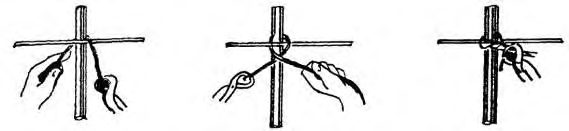
Рисунок 7.1 - Вязка узлов без подтягивания
Рисунок 7.2 - Вязка угловых узлов с подтягиванием
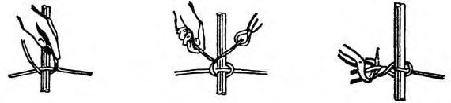
Рисунок 7.3 - Вязка арматуры крючком
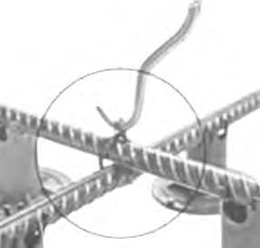
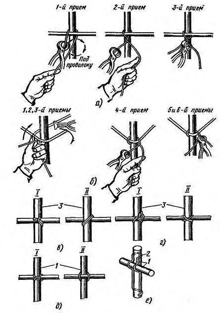
а - вязка проволокой в пучках без подтягивания; б - вязка угловых узлов; в - двухрядный узел; г -крестовый узел; д - мертвый узел; е - скрепление стержней соединительным элементом; I - вид узла спереди; II - вид узла сзади; 1, 3 - стержни; 2 - соединительный элемент;
Рисунок 7.4 Типы проволочных узлов, применяемых при ручной вязке
Арматурные и закладные изделия изготовляют по ГОСТ 14098 и контролируют по ГОСТ Р 57997.
.
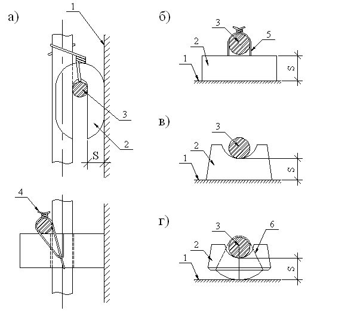
- с большой поверхностью контакта с опалубкой, изготовляемые из цементно-песчаного раствора; с малой поверхностью контакта с опалубкой, изготовляемый из цементно-песчаного раствора; поверхность опалубки;
- фиксатор;
- фиксируемая арматура; вязальная проволока, заделанная в фиксатор; г
- рабочая
- скрутка из вязальной проволоки;
- эластичное кольцо; слоя
Рисунок 7.5 - Фиксаторы однократного использования, обеспечивающие требуемую толщину s защитного слоя бетона
Таблица 7.1 Выбор фиксаторов для обеспечения защитного слоя бетона
| Условия | Вид лицевой грани | Вид фиксаторов | Вид фиксаторов | Вид фиксаторов | Вид фиксаторов | Вид фиксаторов | Вид фиксаторов |
|---|---|---|---|---|---|---|---|
| эксплуатации элемента | элемента | Растворные, бетонные | Растворные, бетонные | Пластмассовые (полиэтиленовые) | Пластмассовые (полиэтиленовые) | Стальные | Стальные |
| РМ | РБ | ПМ | ПБ | СЗ | СН | ||
| На открытом воздухе | Чистая бетонная под окраску; облицованная в процессе бетонирования керамической плиткой | + | - | + | - | + | - |
- нормируемая величина защитного s
| Обрабатываемая механическим способом | + | - | - | - | - | - | |
|---|---|---|---|---|---|---|---|
| В помещениях с нормальным влажностным режимом | Чистая бетонная | + | - | + | - | + | - |
| В помещениях с нормальным влажностным режимом | Бетонная под окраску водными составами | + | х | + | х | + | х |
| В помещениях с нормальным влажностным режимом | Бетонная под окраску масляными, эмалевыми и синтетическими красками | + | + | + | + | + | + |
| В помещениях с нормальным влажностным режимом | Бетонная под оклейку обоями | + | + | + | + | + | - |
Примечание - В настоящей таблице применены следующие условные обозначения: Р растворные и бетонные фиксаторы; П - пластмассовые, полиэтиленовые фиксаторы; С - стальные фиксаторы; М - малая поверхность контакта фиксатора с опалубкой; Б - большая поверхность контакта фиксатора с опалубкой; З - фиксаторы, защищенные от коррозии; Н - фиксаторы, не защищенные от коррозии; знак «+» - допускается; знак «-» - не допускается; знак «х» - допускается, но не рекомендуется.
8Опалубочные работы
- комплекты опалубочных элементов;
- детальные схемы монтажа, демонтажа и укрупнительной сборки опалубки;
- схемы разбивки на технологические захватки и способы устройства рабочих и температурно-осадочных (деформационных) швов;
- последовательность и скорость бетонирования;
- схемы монтажа опорной системы опалубки (башни, телескопические стойки и т. п.);
- схемы размещения и порядок установки и снятия страховочных опорных элементов;
- специальные способы крепления опалубки сложных конструкций (наклонная стена, криволинейные элементы, арки, лестницы и т. п.);
- способы выверки проектного положения и распалубки специальных конструкций (шахты лифтов, арки, своды, проемообразователи и т. п.);
- средства подмащивания и допускаемые нагрузки на них;
- данные по несущей способности опалубочных элементов;
- рекомендуемые типы смазок опалубки;
- мероприятия по безопасному ведению работ;
- другие данные, необходимые подрядной организации для производства работ, в том числе инструкция по монтажу и эксплуатации опалубки.
Выбор типа опалубки и технологии опалубочных работ необходимо проводить по следующим параметрам:
- типам бетонируемых конструкций (стена, колонна, перекрытие и т. п.);
- качеству (классу) поверхности бетона;
- темпам и срокам строительства.
Нагрузки и данные для расчета опалубки приведены в приложении Т СП 70.13330.2012.
Для сложных конструкций или для конструкций с большими технологическими нагрузками и при высоте опорной системы более 5 м к ППР должны быть дополнительно представлены подтверждающие расчеты по несущей способности опалубки и опорной системы.
- точность изготовления и монтажа опалубки;
- качество бетонной поверхности монолитной конструкции после распалубки;
- прочность, жесткость, устойчивость, геометрическую неизменяемость и достаточную герметичность при бетонировании;
- максимальную оборачиваемость;
- минимальную адгезию и химическую нейтральность формообразующих поверхностей по отношению к бетону;
- минимизацию материальных, трудовых и энергетических затрат при монтаже и демонтаже;
- безопасность работ.
Поверхность опалубки после нанесения на нее смазки должна быть защищена от загрязнения, дождя и солнечных лучей. Не допускается попадание смазки на арматуру и закладные детали.
Демонтаж опалубки проводят при достижении бетоном распалубочной прочности способом, исключающим образование дефектов в конструкции.
Для несущих ригелей применять опалубку на отдельных телескопических стойках не допускается.
Скорость бетонирования монолитных конструкций определяют в зависимости от несущей способности опалубки и бокового давления на нее бетонной смеси.
Демонтаж опалубки конструкций проводят в следующем порядке:
- проверяют соответствие расчетной прогнозируемой прочности бетона на основании данных температурного контроля твердения (градусо-часов) требованиям к распалубочной прочности забетонированных конструкций, выполняют частичное распалубливание для проверки достижения бетоном прочности распалубочного уровня согласно требованиям ППР и нормативных документов (для перекрытий следует выполнить проверку прочности бетона со стороны неопалубленных поверхностей);
- удаляют наружные крепления подкосы и распорки, выполняют локальное ослабление стоек горизонтальной и наклонной опалубки;
- снимают стяжные струбцины, связывающие противостоящие стенки опалубки, разбирают несущие элементы опалубочных ригелей;
- освобождают натяжные крюки, связывающие щиты со схватками, снимают схватки и отдельные щиты.
В случае соответствия фактической прочности требуемому уровню в промежуточном возрасте выполняют демонтаж (отрыв) щитов от забетонированной конструкции инструментом и приспособлениями для распалубливания.
9Бетонные работы
9.3Укладка и уплотнение бетонной смеси
Укладка бетонной смеси ступенчатым методом (с одновременной укладкой двух-трех слоев) может быть допущена при условии, что этот метод предусмотрен ППР.
- колонн - на отметке верха фундамента, низа прогонов балок и подкрановых консолей, верха подкрановых балок, низа капителей колонн (рисунок 9.1, а , б );
- стен на отметках верха фундамента и низа перекрытия;
- балок больших размеров, монолитно соединенных с плитами - от 20 до 30 мм ниже отметки нижней поверхности плиты, а при наличии в плите вутов - на отметке низа вута плиты (рисунок 9.1, в , г );
- плоских плит - в любом месте параллельно меньшей стороне плиты (рисунок 9.2, а );
- ребристых перекрытий - в направлении, параллельном второстепенным балкам (рисунок 9.2, б );
- отдельных балок - в пределах средней трети пролета балок, в направлении, параллельном главным балкам (прогонам), и в пределах двух средних четвертей пролета прогонов и плит;
- массивов, арок, сводов, резервуаров, бункеров, гидротехнических сооружений, мостов и других сложных инженерных сооружений и конструкций - в местах, указанных в проекте.
Устройство вертикальных рабочих швов по перемычкам дверных и оконных проемов, а также горизонтальных швов на верхней отметке стены не допускается.
I-IV - места устройства рабочих швов; 1 - колонна; 2 - плита перекрытия; 3 - фундамент; 4 - капитель; 5 -балка; 6 - балка с вутами
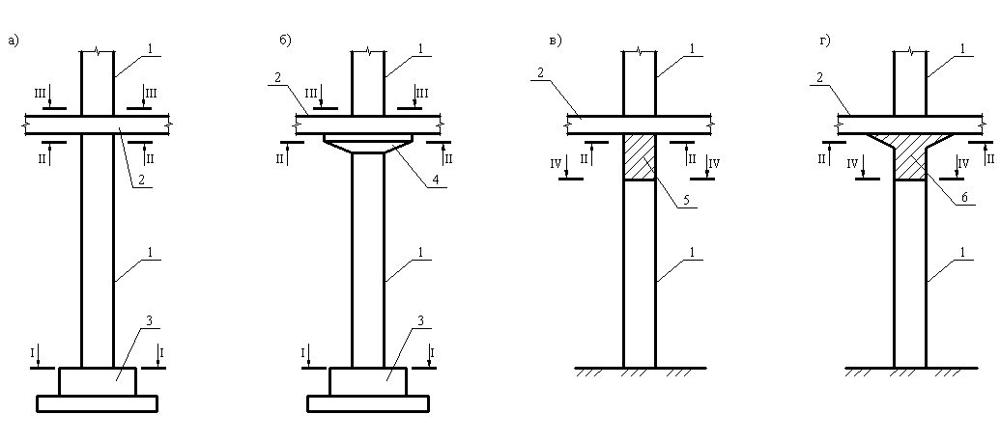
Рисунок 9.1 - Схемы расположения рабочих швов в колоннах ( а , б ) и балках ( в , г ) а - опирающиеся на стены; б - опирающиеся на колонны; I-IV - места устройства рабочих швов; 1 - стена; 2 - колонна; 3 - перекрытие; L 1 и L 2 - соответственно расстояния между продольными и поперечными координационными осями
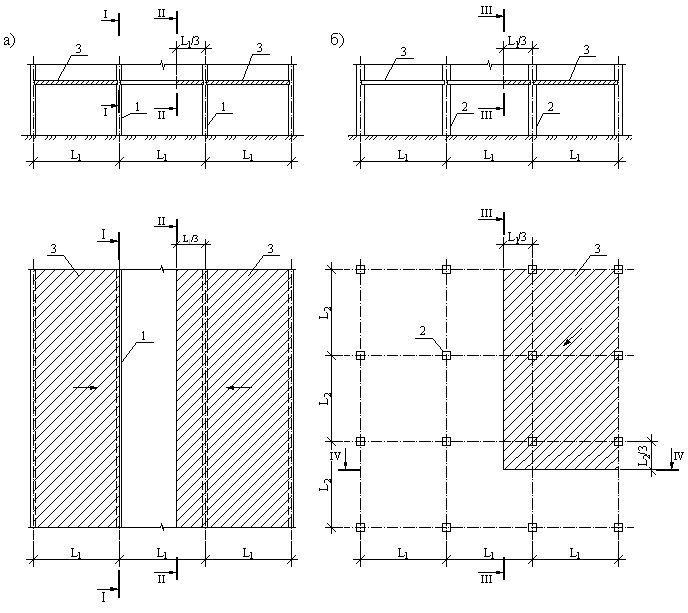
Рисунок 9.2 - Схемы расположения рабочих швов в монолитных плоских плитах перекрытиях
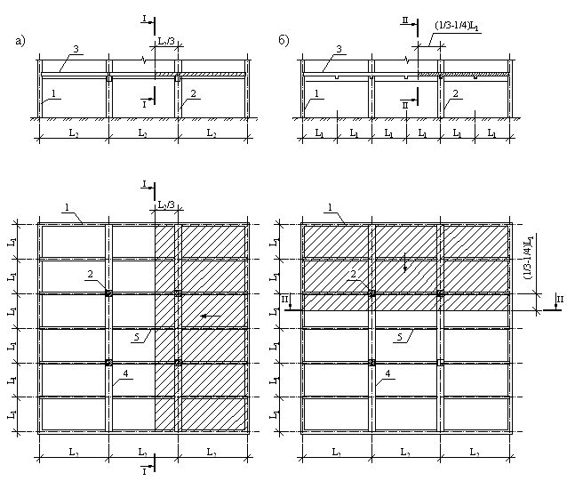
а - при бетонировании в направлении, параллельном главным балкам; б - при бетонировании в направлении, параллельном второстепенным балкам; I-II - места устройства рабочих швов; 1 - стена; 2 -колонна; 3 - перекрытие; 4 - главная балка; 5 - второстепенная балка; L 1 - расстояние между второстепенными балками; L 2 - расстояние между главными балками
Рисунок 9.3 - Схемы расположения рабочих швов в монолитных ребристых перекрытиях
В зимний период продолжительность вибрирования должна быть увеличена на 25 % по сравнению с летними условиями.
Рисунок 9.4 - Схема уплотнения бетонной смеси глубинными вибраторами
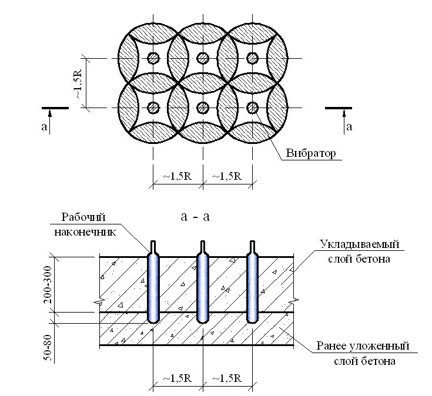
а
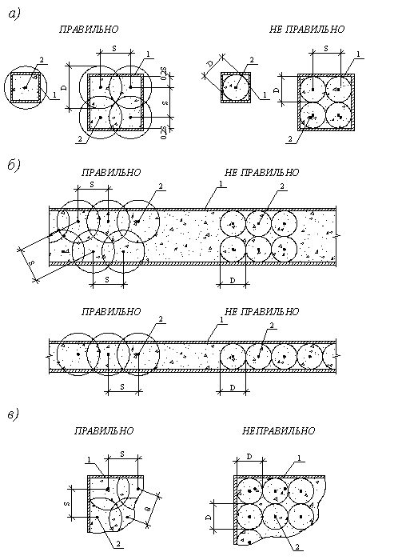
1 - опалубка; 2 - вибратор; S - расстояние между точками погружения вибратора; D - зона распространения колебания (диаметр уплотнения)
Рисунок 9.5 - Схемы перестановки вибратора для колонн ( а ), стен ( б ) и перекрытий ( в )
Шаг перестановки поверхностных вибраторов должен обеспечивать перекрытие площадкой вибратора не менее чем на 100 мм границы провибрированного участка.
Для поверхностного уплотнения смесей с подвижностью до 3 см следует применять утяжеленные вибраторы, передающие удельную нагрузку на бетон в пределах 4-6 МПа.
Время уплотнения бетонных смесей в зависимости от их подвижности следует принимать по таблице 9.1.
Таблица 9.1 Продолжительность уплотнения в зависимости от подвижности бетонной смеси
| Подвижность бетонной смеси (осадка конуса), см | Продолжительность вибрации бетонной смеси, с |
|---|---|
| До 2 | 50 |
| 2-4 | 40 |
| 4-6 | 30 |
| Более 6 | 25 |
Скорость подъема и опускания рабочего наконечника глубинного вибратора в бетонную смесь должна составлять не менее 10 см/с.
При возведении массивных конструкций из бетона на природных пористых заполнителях допускается укладка в бетонные смеси отдельных камней крупностью более 150 мм.
- при массиве, разбитом на блоки, бетонирование замыкающих блоков следует проводить только после усадки и охлаждения бетона смыкаемых блоков;
- бетонирование фундаментов под оборудование, воспринимающих динамические воздействия от этого оборудования, следует проводить без перерыва.
Продолжительность перерыва для обеспечения осадки уложенного бетона устанавливается строительной лабораторией и должна быть не менее 40 мин, но не превышать 2 ч; бетонирование рамных конструкций следует проводить с перерывом между бетонированием колонн (стоек) и ригелей рам.
- скорость укладки бетонной смеси должна обеспечивать заполнение опалубки двумя или тремя слоями смеси на высоту, равную половине высоте опалубки, в течение 2,5-3,5 ч;
- бетонную смесь следует укладывать в опалубку равномерными слоями толщиной не свыше 200 мм в стенах толщиной до 200 мм и не свыше 250 мм в остальных конструкциях;
- каждый новый слой следует укладывать только после окончания укладки предыдущего слоя и до начала его схватывания;
- укладку бетонной смеси следует проводить непрерывно;
- верхний уровень укладываемой смеси должен быть на 50 мм ниже верха щитов опалубки.
- бетонирование конструкций следует осуществлять поярусно;
- бетонную смесь следует укладывать на всю высоту опалубочного щита, при этом верхний уровень укладываемой смеси должен быть ниже верха щитов на 50-70 мм;
- укладку бетонной смеси следует проводить непрерывно.
- бетонирование балок и плит, монолитно связанных с колоннами и стенами, следует проводить через 1-2 ч после бетонирования этих колонн и стен;
- бетонирование балок (прогонов) и плит перекрытий следует проводить одновременно. При больших размерах балок, арок и аналогичных конструкций (при высоте, превышающей 800 мм) их разрешается бетонировать отдельно от плит, располагая рабочие швы в соответствии с 9.3.8.
10Уход за твердеющим бетоном. Общие принципы и правила
- способы и продолжительность ухода (см. 10.3, 10.4);
- перечень контролируемых в процессе ухода показателей и способы контроля.
- поддерживать температурно-влажностный режим, обеспечивающий нарастание прочности бетона;
- предохранять от испарения воды открытые поверхности свежеуложенного бетона немедленно после окончания бетонирования (в том числе и при перерывах в укладке). Свежеуложенный бетон должен быть также защищен от попадания атмосферных осадков;
- предохранять твердеющий бетон от ударов, сотрясений и других механических воздействий.
Поверхности бетона, не предназначенные в дальнейшем для монолитной связи с бетоном или раствором, вместо укрытия и поливки следует покрывать пленкообразующими составами или защитными пленками.
Благоприятные температурно-влажностные условия должны обеспечиваться систематическим увлажнением, предохранением его от воздействия ветра, прямых солнечных лучей. Увлажнение следует проводить с частотой, при которой поверхность бетона в период ухода все время была бы во влажном состоянии.
В технологическом процессе прогрева бетона в монолитных конструкциях должны быть приняты меры по снижению температурных перепадов и взаимных перемещений между опалубочной формой и бетоном.
В массивных монолитных конструкциях следует предусматривать мероприятия по уменьшению влияния температурно-влажностных полей напряжений, связанных с экзотермией при твердении бетона, на целостность и трещиностойкость конструкций.
Для массивных гидротехнических сооружений мероприятия, обеспечивающие заданный температурно-влажностный режим их твердения, должны устанавливаться проектом с учетом требований по регулированию температурного режима при возведении массивных сооружений, приведенных в СП 70.13330.
15 - при прогреве конструкций с модулем поверхности более 10 и протяженностью до 6 м, а также конструкций, возводимых в скользящей опалубке;
10 - при прогреве конструкций с модулем поверхности от 6 до 10;
8 - при прогреве конструкций с модулем поверхности от 4 до 6;
5 - при прогреве конструкций с модулем поверхности от 2 до 4.
- рабочие швы при бетонировании при электродном прогреве должны размещаться так, чтобы расстояние от шва до ряда электродов, находящихся в бетоне, не превышало 100 мм;
- электрическое сопротивление бетонной смеси при электродном прогреве может быть снижено введением в нее добавки - ускорителя твердения бетона или ингибитора коррозии стали;
- электропрогрев армированных конструкций следует проводить при напряжениях не свыше 127 В; электропрогрев при напряжениях 127-220 В может быть допущен только на основе специально разработанной технологической карты для отдельно стоящих конструкций при условии, что прогреваемая конструкция (или ее участок) не связана общим армированием с соседними участками;
- электроразогрев бетонной смеси допускается проводить при напряжении до 380 В, соблюдая отдельно установленные правила техники безопасности работ.
10 °С в 1 ч - для конструкций с модулем поверхности более 10;
5 °С в 1 ч - для конструкций с модулем поверхности от 6 до 10, а для более массивных конструкций -значения, определяемого расчетом и обеспечивающего отсутствие трещин в поверхностных слоях бетона.
При понижении температуры выдерживаемого бетона ниже расчетного уровня бетон необходимо дополнительно утеплить или применить дополнительный обогрев до приобретения бетоном уровня критической прочности, по достижении которого может быть допущено его замораживание.
Требования по минимальной критической прочности к моменту замораживания приведены в таблице 5.7 СП 70.13330.2012.
- снятие боковых элементов опалубки, не несущих нагрузки от массы конструкций, - после достижения бетоном прочности, обеспечивающей сохранность поверхности и кромок углов при снятии опалубки;
- распалубливание несущих железобетонных конструкций -после достижения бетоном прочности, указанной в таблице 10.1;
- снятие опалубки, воспринимающей массу бетона конструкций, армированных несущими сварными каркасами, - после достижения бетоном этих конструкций 25 % проектной прочности.
Таблица 10.1 Прочность бетона от проектной для распалубливания конструкций
| Конструкции | Прочность бетона (% проектной) при фактической нагрузке | Прочность бетона (% проектной) при фактической нагрузке |
|---|---|---|
| свыше 70 %расчетной | менее 70 %расчетной | |
| 1 Находящиеся в мерзлом грунте | 100 | 70-85* |
| 2 Несущие длиной менее 6 м | 100 | 70 |
| 3 Несущие длиной 6 м и более | 100 | 80 |
| *При отсутствии в бетоне добавок - ускорителей твердения и противоморозных. | *При отсутствии в бетоне добавок - ускорителей твердения и противоморозных. | *При отсутствии в бетоне добавок - ускорителей твердения и противоморозных. |
В зимних условиях конструкционно-теплоизоляционные и теплоизоляционные бетоны на пористых заполнителях должны выдерживаться:
- преимущественно по способу термоса с предварительным электроразогревом бетонной смеси и применением химических добавок ускорителей твердения;
- по способу термоса в сочетании с различными методами обогрева бетона, исключающими его увлажнение;
- с электротермообработкой бетона или обогревом его теплым воздухом.
Максимально допускаемая температура электропрогрева легких бетонов не должна превышать 90 °С для бетонов на шлакопортландцементах и 80 °С для бетонов на портландцементах.
- 0,5 - теплоизоляционных;
- 3,0 - конструкционно-теплоизоляционных;
- 5,0 - конструкционных класса менее В12,5.
При контроле качества бетона на пористых заполнителях следует проверять среднюю плотность уложенной бетонной смеси и ее расслаиваемость не менее двух раз в смену. Объем межзерновых пустот в уплотненной бетонной смеси следует проверять один раз в смену. В необходимых случаях следует проверять также теплопроводность, влажность, а также воздухо- или паронепроницаемость ограждающих конструкций.
0,5 - теплоизоляционных;
- 1,5 - конструкционно-теплоизоляционных;
3,5, но не менее 50 % класса бетона - конструкционных с ненапрягаемой арматурой.
- скорость нагрева и остывания бетона;
- перепад температуры по сечению бетона конструкций;
- разность температур наружного воздуха и бетона при распалубке.
- в зонах, подверженных наибольшему охлаждению (углы, выступающие части, слои, соприкасающиеся с охлажденным грунтом, не отогретыми стыкуемыми элементами, неукрытые и неутепленные поверхности и др.).
- точки измерений располагаются в наиболее нагретых частях конструкций (вблизи струнных, стержневых и полосовых электродов, возле арматурных стержней и стальной опалубки при индукционном прогреве, в слоях, соприкасающихся с греющей опалубкой или греющими проводами, в местах подвода пара и горячего воздуха и т. п.).
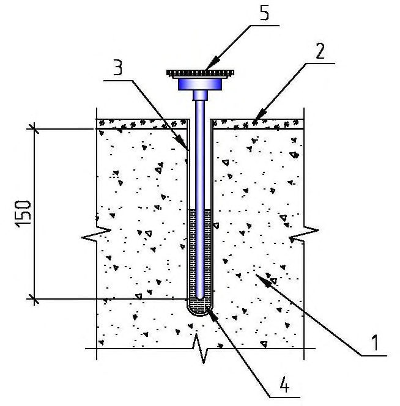
1 - монолитная конструкция; 2 - опалубка; 3 - пенал (трубки); 4 - жидкость; 5 - вставной биметаллический термометр
Рисунок 10.1 Установка технического термометра в прогреваемой конструкции
На рисунках 10.2-10.6 приведены схемы расположений термопар (или трубок) в местах замера температур различных конструкций.
Наряду с контактными средствами замера температуры (термометрами и термодатчиками, а также с применением цифровых измерителей температуры) твердеющего бетона могут применяться косвенные (неконтактные), осуществляющие замер дистанционно с применением инфракрасных измерителей - пирометров и тепловизоров.
Средства измерений, используемые при измерении температуры бетона, должны быть поверены (или откалибрированы) в установленном порядке.
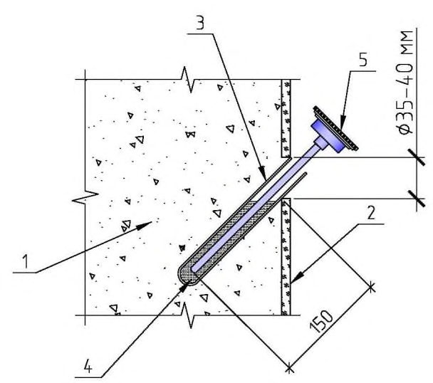
D - ширина балок; H - высота стен; А, Б, В, Г - местоположение точек замера температуры (термодатчиков) на плане (сверху); А1, А2, А3, Б1, Б2, Б3, Г1, Г2 - соответственно местоположение точек замера температуры в разрезе (по высоте)
Рисунок 10.2 - Схема расположения термодатчиков в местах замера температуры в конструкциях стен
План колонн (вид сверху)
H - высота колонн; А, Б - местоположение точек замера температуры на плане; А1, А2, А3, Б1, Б2, Б3, Г1, Г2 соответственно местоположение точек замера по высоте колонн
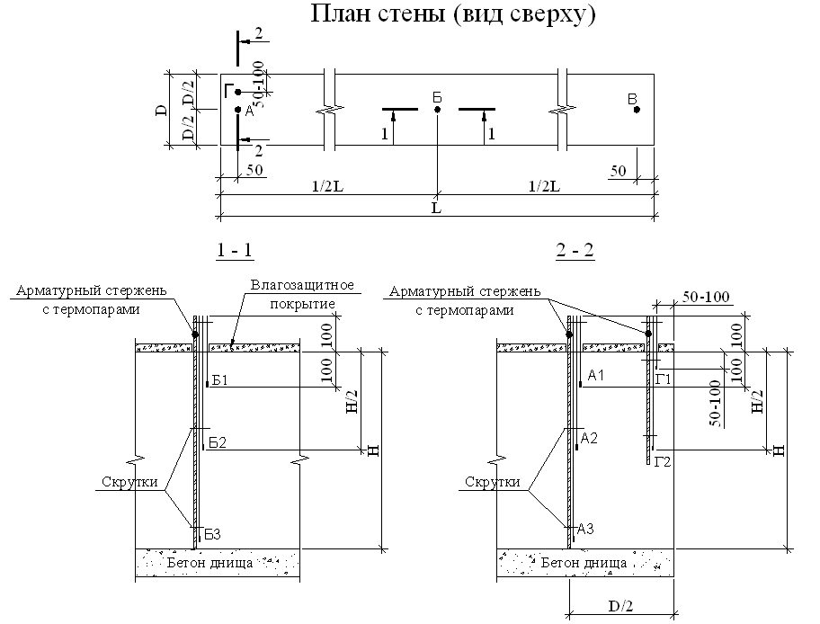
Рисунок 10.3 - Схема расположения термодатчиков в местах замера температуры в конструкциях колонн
D - ширина балок; H - высота балок; L - длина балок; А, Б, В - местоположение точек замера температуры на плане (сверху); А1, А2, А3, Б1, Б2, Б3, Г1, Г2 - соответственно местоположение точек замера температуры в разрезе (по высоте)
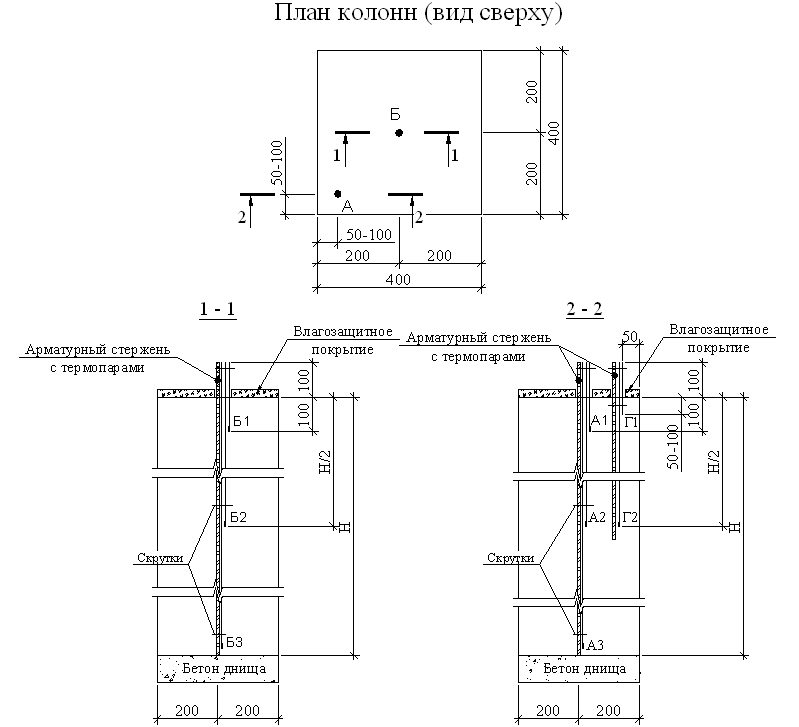
Рисунок 10.4 - Схема расположения термодатчиков в местах замера температуры в конструкциях балок
План фундаментной плиты (вид сверху)
H - высота плиты; L' - длина фундаментной плиты; L'' - ширина фундаментной плиты; Б - местоположение точек замера температуры (термодатчиков) на плане (сверху); Б1, Б2, Б3 - соответственно местоположение точек замера температуры в разрезе (по высоте)
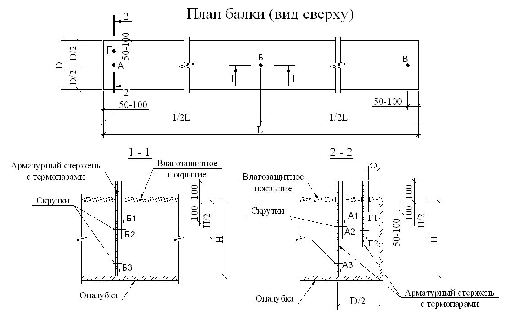
Рисунок 10.5 - Схема расположения термодатчиков в местах замера температуры в фундаментной плите
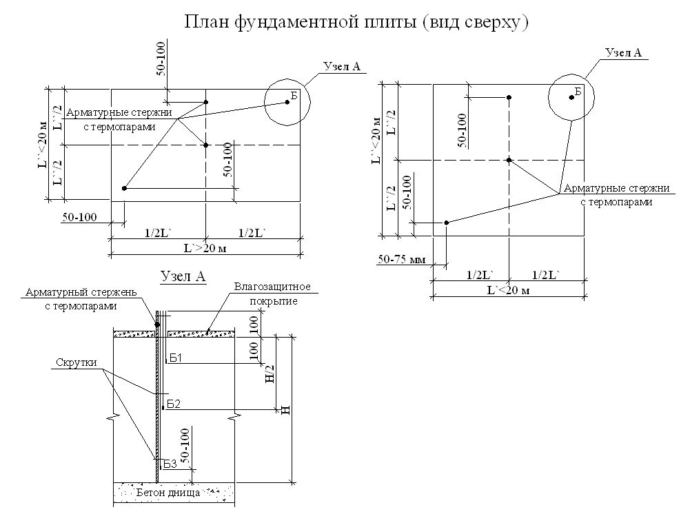
Рисунок 10.6 - Схема расстановки температурных скважин в отдельном фундаменте
- на каждые 3-6 пог. м для длинномерных конструкций;
- на 10-12 м² площади перекрытий;
- на 30 м² площади фундаментной плиты;
- на 10 м² площади покрытий типа подготовок, полов, днищ и т. п.;
При использовании холодных бетонов с противоморозными добавками число точек измерений может быть уменьшено до двух на конструкцию или захватку, бетонируемую в течение одной смены.
- в процессе выдерживания бетона: при применении способов термоса, предварительного электроразогрева бетонной смеси, с парообогревом в тепляках - каждые 2 ч в первые сутки, не реже двух раз в смену в последующие 3 сут, один раз в сутки в остальное время выдерживания;
- при использовании бетона с противоморозными добавками - три раза в сутки до приобретения им заданной прочности;
- при электротермообработке бетона в период подъема температуры со скоростью до 10 °С в 1 ч - через 2 ч, в дальнейшем - не реже двух раз в смену.
В журнале ответственными лицами за прогрев бетона заполняются графы сдачи и приемки смены. Способ прогрева бетона должен быть установлен в ППР и указан для каждого конструктивного элемента.
11Особенности ухода за бетоном в зимнее время
1) набор прочности бетона основного состава по ГОСТ 30459 не менее 30 % прочности бетона контрольного состава после выдерживания основного состава 28 сут при расчетной отрицательной температуре, а контрольного состава - 28 сут в нормальных условиях по ГОСТ 10180;
2) значение прочности бетона основного состава не менее 95 % прочности бетона контрольного состава после выдерживания основного состава при расчетной отрицательной температуре в течение 28 сут и затем в нормальных условиях 28 сут, а контрольного состава - 28 сут в нормальных условиях по ГОСТ 10180;
3) достижение после выдерживания основного состава при расчетной отрицательной температуре в течение 28 сут и затем в нормальных условиях 28 сут установленных значений марок по морозостойкости и водонепроницаемости; б) для теплого бетона значение прочности бетона основного состава, твердевшего в нормальных условиях 28 сут после выдерживания при расчетной отрицательной температуре в течение расчетного времени транспортирования бетонной смеси (но не более 4 ч), не менее 95 % прочности бетона контрольного состава, твердевшего 28 сут в нормальных условиях по ГОСТ 10180, а также установленных значений марок по морозостойкости и водонепроницаемости.
При наличии противоморозных добавок в составе сухой строительной смеси не допускается введение в состав бетонной смеси, готовой к применению, в процессе ее приготовления дополнительных противоморозных добавок.
11.6Укладка бетона на промороженное основание
В вечномерзлых грунтах производство бетонных работ можно начинать в том случае, когда мерзлотно-грунтовые условия основания соответствуют данным проекта. Подготовленное под бетонирование основание должно быть защищено от оттаивания летом и промерзания зимой.
- в местных тепляках из брезента, полиэтилена, фанеры, обогреваемых электропечами сопротивления или электрообогревателями, работающими на любом топливе. Температуру воздуха в тепляках на поверхности отогреваемого основания следует поддерживать в пределах 10 о С - 35 о С;
- электропрогревом с использованием вертикальных или горизонтальных электродов;
- прогревом плоскими жидкостно-топливными нагревателями или открытым пламенем (кроме бетонных оснований).
Способы отогрева не должны вызывать снижения качества старого бетона (скалы).
Не допускается оттаивания мерзлых грунтов оснований с помощью пара либо наливкой горячей водой, либо растворами хлористых и других солей.
Способ отогрева основания выбирается с учетом имеющегося оборудования, источника тепла, температуры наружного воздуха, размеров конструкций, глубины отогрева и утеплителя.
Отогрев следует проводить способами, не вызывающими снижения качества уложенного ранее бетона
- температуры, установленной расчетом, - при выдерживании бетона по методу термоса;
- температуры замерзания раствора затворения, увеличенной на 5 о С, при применении бетона с противоморозными добавками;
- 0 о С в наиболее охлажденных зонах - перед началом предварительного электроразогрева бетонной смеси или форсированном электроразогреве ее в конструкциях и 2 о С - при применении других методов тепловой обработки бетона.
В зимнее время при низкой температуре промороженного в верхних слоях грунта сезонно-оттаивающего слоя (1,5-2 м) бетон буронабивных свай следует обогревать (прогревать) до температуры 40 о С - 60 о С. Если свая уходит в слой грунта вечной мерзлоты, в нижнюю часть сваи следует укладывать бетон с противоморозной добавкой, а верхнюю (в активном промороженном слое) - прогревать. Это следует делать греющим проводом, заранее установленным на арматуру до опускания сваи в скважину. Прогрев бетона свай также можно осуществить с помощью струнных электродов.
11.7Выдерживание бетона
При невозможности получения методом достаточной для распалубки и загружения конструкции прочности бетона в заданные сроки следует применять бетоны с противоморозными добавками, предварительный разогрев смеси перед укладкой ее в опалубку, способы прогрева или обогрева уложенного бетона с использованием электрической энергии, пара, теплого воздуха.
11.8Распалубливание конструкций
Сроки распалубливания и загружения конструкций в зимних условиях необходимо принимать с учетом следующих правил:
- распалубливание и загружение конструкций следует проводить после испытания бетона конструкции на прочность методами неразрушающего контроля или после испытания контрольных образцов бетона и установления соответствия фактического температурного режима указанному в технологической карте;
- снятие опалубки и теплозащиты с конструкций, выдержанных по методу термоса, следует проводить не ранее остывания бетона в наружных слоях до 0 о С, при электротермообработке - не ранее остывания до температуры, предусмотренной расчетом, не допуская примерзания опалубки к бетону, а при применении бетонов с противоморозными добавками - по достижении прочности, указанной в 10.11;
- распалубленные конструкции должны временно укрываться теплоизоляцией, если разность температур поверхностного слоя бетона и наружного воздуха превышает: 20 о С -для конструкций с модулем поверхности от 2 до 5 и 30 о С - для конструкций с модулем поверхности 5 и выше;
- распалубливание массивных блоков с модулем поверхности менее 2, а также гидротехнических сооружений следует проводить с учетом заданных ППР наибольших допустимых температурных перепадов между ядром блока и его поверхностью, а также между поверхностью блока и наружным воздухом.
Результаты измерения температур бетонной смеси и бетона необходимо записывать в ведомость контроля температур.
12Особенности ухода за бетоном в сухих и жарких климатических условиях
- дробным введением пластифицирующих добавок;
- введением замедлителей схватывания и твердения;
- совместным применением указанных способов.
Таблица 12.1 Допустимая продолжительность перевозки и укладки бетонной смеси
| Температура свежеприготовленной бетонной смеси, о С | Допустимая продолжительность перевозки и укладки смеси, мин |
|---|---|
| 25 | 30-60 |
| 30 | 15-30 |
| 35 | 10-15 |
Не допускается восстанавливать подвижность бетонной смеси до требуемой консистенции добавлением воды на месте ее укладки.
12.3.3 Перед укладкой бетонной смеси:
- а) место укладки защищается от солнечных лучей путем устройства навесов или установки передвижных щитов;
- б) опалубка, арматура и основания охлаждаются разбрызгиванием холодной воды.
13Специальные методы бетонирования
При невозможности использования традиционных методов бетонирования следует осуществлять возведение конструкций с применением специальных методов, разрабатываемых для конкретных условий ведения работ в виде технологического регламента и ППР с учетом требований подраздела 5.13 СП 70.13330.2012.
14Контроль качества выполненных работ
14.1Общие положения
Для обеспечения в ходе выполнения работ требований, предъявляемых к бетонным и железобетонным конструкциям, следует проводить входной, операционный и приемочный контроль.
При входном контроле входящих материалов и оснастки по документам о качестве устанавливают соответствие условиям договора поставки, а также в соответствии с требованиями ППР проводят испытания по определению нормируемых технических и технологических показателей качества.
При операционном контроле устанавливают соответствие фактических способов выполнения работ, режимов бетонирования конструкций и условий твердения бетона предусмотренным в ППР.
При приемочном контроле устанавливают соответствие фактических параметров монтажа арматурных каркасов и опалубки, показателей качества бетона конструкций всем нормируемым проектным показателям качества.
14.2Контроль арматурных работ
- входной контроль поставляемых материалов и изделий;
- операционный контроль технологического процесса;
- приемочный контроль арматурного каркаса (акты на освидетельствование скрытых работ и акты приемки).
Сварные соединения должны пройти обязательный приемочный контроль строительной лабораторией.
Армирование конструкций должно осуществляться в соответствии с проектной документацией и удовлетворять требованиям к максимальным допустимым отклонениям таблицы 5.10 СП 70.13330.2012.
14.3Правила контроля качества опалубочных работ
14.4Правила контроля и приемки бетонных смесей
В случае использования смеси в течение времени, превышающего значение сохраняемости, марка бетонной смеси должна дополнительно определяться непосредственно перед укладкой в целях принятия решения о возможности использования бетонной смеси по назначению. При невозможности использования бетонной смеси по назначению бетонная смесь возвращается заводу-изготовителю с заполнением соответствующего акта возврата по приложению Б.
- на пробе из первого автобетоносмесителя для каждой партии определяют все нормируемые технологические характеристики;
- на пробах, отобранных из последующих не менее чем четырех автобетоносмесителей, определяют удобоукладываемость и среднюю плотность бетонной смеси;
- в дальнейшем не реже чем из каждого десятого автобетоносмесителя осуществляется контроль удобоукладываемости бетонной смеси.
При необходимости контроля морозостойкости бетона в конструкциях определение морозостойкости бетона проводят по ГОСТ 10060, используя контрольные образцы, отобранные из конструкций, по ГОСТ 28570.
- отбор проб от первого объема поставки в размере 60 м³ - не менее 2;
- последующие поставки - не менее одной пробы с каждых 60 м³ .
- по ГОСТ 10181 - удобоукладываемость (осадка конуса и расплыв конуса, жесткость и коэффициент уплотнения), расслаиваемость, средняя плотность и пористость, объем вовлеченного воздуха;
- ГОСТ 30459 - сохраняемость требуемых технологических свойств.
Температуру бетонной смеси измеряют термометром ценой деления 1 о С, погружая его в смесь на глубину не менее 5 см.
- а) выбор сухой строительной смеси следует проводить в зависимости от области применения в соответствии с ГОСТ 31189, при этом не допускается смешивание сухих строительных смесей различных марок;
- б) транспортирование, складирование, хранение сухих строительных смесей следует проводить в соответствии с ГОСТ 31357 и инструкцией производителя сухой строительной смеси;
- в) не допускается введение каких-либо компонентов в состав бетонной смеси, готовой к применению, полученной из сухой строительной смеси, за исключением ввода крупного заполнителя в количестве не более 0,75 массы сухой растворной смеси в растворные напольные смеси по ГОСТ 31189 при соблюдении следующих условий:
- наибольшая крупность заполнителя не превышает половины толщины выполняемого бетонного слоя;
- крупный заполнитель должен соответствовать ГОСТ 26633 и вводиться в состав смеси в процессе ее приготовления;
- при приготовлении бетонной смеси, готовой к применению, объем замеса должен быть установлен из условия его выработки в течение времени, не превышающего значения сохранности подвижности бетонной смеси;
- не допускается применение сухих строительных смесей, срок хранения которых превысил гарантийный срок хранения, указанный производителем.
- наличие зафиксированных нарушений технологии укладки смеси в процессе бетонирования (вынужденные перерывы бетонирования, недостаточное уплотнение смеси в опалубке, попадание атмосферных осадков в бетонную смесь при укладке, сбои в технологии производства бетонной смеси на заводе-изготовителе и т. п.);
- возраст и условия твердения бетона контролируемых конструкций;
- возможность применения тех или иных методов неразрушающего или разрушающего контроля в данных условиях;
- объем и вид контролируемых конструкций, объединенных в партии или группы;
- выбор метода (схемы) статистической обработки получаемых результатов с учетом имеющихся градуировочных зависимостей, номенклатуры классов уложенного бетона и других факторов.
При применении бетонов классов выше В60 для контроля качества бетона конструкций дополнительно следует руководствоваться требованиями ГОСТ 31914.
- показателей качества бетона по прочности в конструкциях по ГОСТ 18105;
- морозостойкости по ГОСТ 10060;
- водонепроницаемости по ГОСТ 12730.5;
- истираемости по ГОСТ 13087;
- диффузионной проницаемости для углекислого газа по ГОСТ 31383. Показатели диффузионной проницаемости бетона приведены в таблице 1 ГОСТ Р 52804-2007.
- прочности по ГОСТ 10180;
- водопоглощения по ГОСТ 12730.3, ГОСТ 5802;
- морозостойкости (кроме смесей для внутренних работ) по ГОСТ 10060, ГОСТ 31356;
- прочности сцепления с основанием (адгезия) по ГОСТ 31356;
- водонепроницаемости по ГОСТ 12730.5;
- истираемости по ГОСТ 13087;
- морозостойкости контактной зоны по ГОСТ 31356.
14.6Требования, предъявляемые к законченным конструкциям
15Контроль и приемка конструкций
- наличия полного перечня исполнительной технической документации, касающейся качества входящих на строительную площадку материалов и изделий для выполнения монолитных работ, актов освидетельствования скрытых работ, документации с результатами контроля качества готовых бетонных и железобетонных конструкций;
- геометрических параметров и пространственного расположения проектным требованиям в пределах допусков;
- выполненных скрытых работ требованиям проекта на основании подписанных ответственными лицами актов освидетельствования скрытых работ и, при необходимости, выборочного инспекционного контроля;
- свойств бетона проектным требованиям по 14.4 и 14.5;
- применяемых в конструкции материалов, полуфабрикатов и изделий требованиям проектной документации по данным входного контроля технической документации по 14.6;
- качества рабочих швов бетонирования нормативным документам.
- фундаменты зданий или сооружений;
- фундаменты под оборудование и их элементы (анкерные болты, закладные детали, технологические отверстия, колодцы и др.);
- поэтажно сетка колонн и геометрические параметры колонн и перекрытий каркасных зданий, вертикальных несущих конструкций, диафрагм жесткости;
- геометрические параметры лифтовой шахты;
- отметки консолей колонн;
- другие элементы, указанные в проектной документации.
При контроле геометрических параметров измерения следует проводить по ГОСТ 23616 с точностью ±1 мм при допуске до 10 мм и с точностью ±2 мм при допуске свыше 10 мм.
и частное значение прочности бетона конструкции не ниже значения проектного класса. Результаты определения фактического класса прочности бетона каждой конструкции должны быть приведены в журнале бетонных работ.
15.5Дефектоскопия готовых монолитных бетонных и железобетонных конструкций
Решение о необходимости усиления конструкций принимают на основании поверочного расчета.
- систематизацию и классификацию выявленных дефектов;
- оценку необходимости усиления конструкций, выполненную совместно с авторской проектной организацией;
- меры по обеспечению безопасности проведения ремонтных работ (переопирание ремонтируемых конструкций), инструктаж для персонала, которому поручено выполнение ремонтных мероприятий, перечень необходимого инструмента, материалов и оборудования, обеспечивающих эффективное выполнение работ;
- потребность в укрывном материале или создание необходимых благоприятных условий применения и твердения ремонтных составов;
- выбор технологии выполнения ремонта: расшивка и заделка; вскрытие и повторное бетонирование участков конструкции; торкретирование; инъектирование и т. п.;
- выбор материалов для ремонта;
- мероприятия по уходу за ремонтными участками;
- контроль качества отремонтированных участков конструкций.
При невозможности выполнения контроля качества ремонтных работ, подтверждающего эксплуатационную пригодность и надежность отремонтированных конструкций, следует выполнить натурные испытания отдельных несущих железобетонных и бетонных конструкций.
При невозможности или экономической нецелесообразности выполнения ремонтно-восстановительных работ разрабатывается проект демонтажа и повторного возведения отдельных существующих монолитных конструкций здания.
Отремонтированные или замененные конструкции должны быть приняты по актам авторским и техническим надзором строительной и проектной организации.
16Инспекционный контроль
16.2Инспекционный контроль прочности бетона
- в процессе строительства зданий и сооружений, когда подрядчик или независимая лаборатория ведет систематический статистический контроль прочности бетона по ГОСТ 18105, - схема А;
- после окончания строительства, при обследовании бетонных и железобетонных конструкций по ГОСТ 31937, - схема Б.
- либо принять коэффициент вариации прочности бетона, который был рассчитан лабораторией для данной партии конструкции, в которую входит проверяемая конструкция, и определить фактический класс прочности бетона по формуле (11) ГОСТ 18105-2010 (схема А.1);
- либо самостоятельно экспериментально определить коэффициент вариации прочности в проверяемой конструкции (по схеме В ГОСТ 18105) и по этому коэффициенту рассчитать фактический класс прочности бетона по формуле (11) ГОСТ 18105-2010 (схема А.2).
Примечание - В случаях, когда при инспекционном контроле значение прочности бетона, определенной инспектором, совпадает (с отклонениями не более 10%) с прочностью бетона, которая была определена при приемке конструкции, а коэффициенты вариации не совпадают, следует принимать значение коэффициента вариации прочности бетона по данным приемочного контроля.
АПриложение А. Рекомендуемая продолжительность перемешивания фибробетонных смесей
Таблица А.1 Продолжительность перемешивания фибробетонных смесей
| Вместимость смесителя по загрузке, л | Продолжительность перемешивания, с, не менее, в гравитационных смесителях для фибробетонных смесей марок по удобоукладываемости | Продолжительность перемешивания, с, не менее, в гравитационных смесителях для фибробетонных смесей марок по удобоукладываемости | Продолжительность перемешивания, с, не менее, в гравитационных смесителях для фибробетонных смесей марок по удобоукладываемости |
|---|---|---|---|
| Вместимость смесителя по загрузке, л | Ж1 и П1 | П2 | П3-П5 |
| Менее 750 | 100 | 85 | 70 |
| 750-1500 | 130 | 95 | 100 |
| Более 1500 | 160 | 145 | 130 |
БПриложение Б. Форма акта возврата бетонной смеси
АКТ
возврата бетонной смеси
Место составления акта (город, поселок и т. д) \_\_\_\_\_\_\_\_\_\_\_\_\_\_\_ «\_\_\_» \_\_\_\_\_\_\_\_\_\_\_ 20 \_\_\_ г.
Настоящий акт составлен в присутствии следующих лиц:
\_\_\_\_\_\_\_\_\_\_\_\_\_\_\_\_\_\_\_\_\_\_\_\_\_\_\_\_\_\_\_\_\_\_\_\_\_\_\_\_\_\_\_\_\_\_\_\_\_\_\_\_\_\_\_\_\_\_\_\_\_
(фамилия, должность, предприятие)
\_\_\_\_\_\_\_\_\_\_\_\_\_\_\_\_\_\_\_\_\_\_\_\_\_\_\_\_\_\_\_\_\_\_\_\_\_\_\_\_\_\_\_\_\_\_\_\_\_\_\_\_\_\_\_\_\_\_\_\_\_
(фамилия, должность, предприятие)
\_\_\_\_\_\_\_\_\_\_\_\_\_\_\_\_\_\_\_\_\_\_\_\_\_\_\_\_\_\_\_\_\_\_\_\_\_\_\_\_\_\_\_\_\_\_\_\_\_\_\_\_\_\_\_\_\_\_\_\_\_
(фамилия, должность, предприятие)
Марка и номер автомобиля\_\_\_\_\_\_\_\_\_\_\_\_\_\_\_\_\_\_\_\_\_\_\_\_\_\_\_\_\_\_\_\_\_\_\_\_\_\_ Грузоотправитель\_\_\_\_\_\_\_\_\_\_\_\_\_\_\_\_\_\_\_\_\_\_\_\_\_\_\_\_\_\_\_\_\_\_\_\_\_\_\_\_\_\_\_\_\_\_ Товарно-транспортная накладная №\_\_\_\_\_\_ от «\_\_\_» \_\_\_\_\_\_\_\_\_\_ 20 г. Наименование груза - бетонная смесь - \_\_\_\_\_\_\_\_\_\_ м³ .
Описание обстоятельств, вызвавших составление акта: бетонная смесь, доставленная на строительную площадку в \_\_\_\_ ч \_\_\_\_ мин и проверенная в \_\_\_\_ ч \_\_\_\_ мин, имела подвижность (ОК) \_\_\_\_см, температуру (Т) \_\_\_\_, °С, что не отвечает требованиям регламента, и не может быть принята для укладки в конструкцию.
Автомобиль возвращен или переадресован (ненужное зачеркнуть).
ПОДПИСИ
М. П.
ВПриложение В. Способы строповки арматуры
Рисунок В.1 - Способы строповки плоской и рулонных сеток ( а -г ) и пространственного арматурного каркаса ( д )
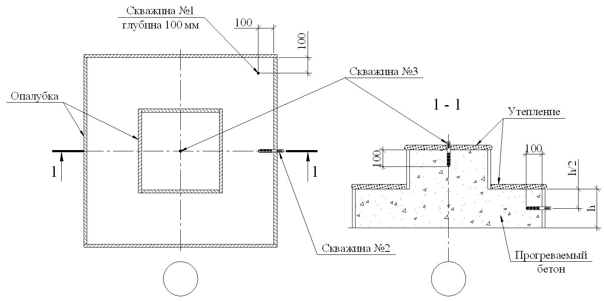
Таблица Г.1
ГПриложение Г. Методы электротермообработки бетона и рациональные области применения
| Метод электротермообработки бетона | Краткая характеристика и рациональная область применения | Ориентировочный расход электроэнергии на 1 м³ бетона, кВт·ч | Примечание |
|---|---|---|---|
| 1 Электропрогрев: а) электродный (сквозной) | Прогрев сборных и монолитных бетонных и малоармированных железобетонных изделий и конструкций путем пропускания тока через всю толщу бетона. Применение наиболее эффективно для ленточных фундаментов, а также для колонн, стен и перегородок толщиной до 50 см, блоков стен и подвалов Прогрев периферийных зон бетона массивных и средней массивности бетонных и железобетонных сборных | 80-120 80-120 | Режимы прогрева - мягкие. Скорость подъема температуры не должна превышать 20 о С /ч. В качестве электродов используются стержни и струны диаметром не менее 6 мм или полосы шириной не менее 15 мм, выполненные из листовой стали и нашиваемые на внутреннюю поверхность опалубки При прогреве массивных конструкций необходимо поддерживать температуру в периферийных слоях на 5 о С - 10 о С ниже или на уровне температуры в ядре. Режимы прогрева - мягкие. Скорость подъема о |
| б) периферийный | изделий и монолитных конструкций | температуры - не выше 10 С/ч. |
| в) с использованием в качестве электродов арматуры | Применяется в качестве одностороннего прогрева изделий и конструкций, имеющих толщину не более 20 см, и двухстороннего прогрева при толщине изделий из конструкций более 20 см. К таким изделиям и конструкциям относятся: ленточные фундаменты, бетонные подготовки и полы, плоские перекрытия и доборные элементы, стены и перегородки и т. д. Прогрев сборных изделий и монолитных конструкций, армированных отдельными, не связанными между собой стержнями, плоскими каркасами и пр. | 80-120 | В качестве электродов применяются стержни, полосы, ленты из сплошного или напыленного металла, закрепленные (напыленные) на опалубку или на специальные щиты, устанавливаемые на неопалубленную поверхность конструкций (при прогреве бетона в конструкциях с большой открытой поверхностью) Режимы прогрева - мягкие. Скорость подъема температуры - не выше 10 о С/ч |
|---|---|---|---|
| 2 Электронагрев. Нагрев бетона в электромагнитном поле (индукционный) | Нагрев железобетонных конструкций литейного типа с равномерно распределенной по сечению арматурой путем устройства индуктора вокруг элемента. Применяется при прогреве сборных изделий и монолитных конструкций, таких как: колонны, ригели, балки, прогоны, элементы рамных конструкций, стволы труб и силосов, коллекторы и опускные колодцы, сваи и перемычки, а также при замоноличивании стыков каркасных конструкций | 120-150 | Режимы прогрева мягкие. Скорость подъема температуры - не выше 20 о С/ч. Нагрев бетона происходит от нагреваемой в электромагнитном поле арматуры или обогрев бетона от металлической формы. Нагревание бетона через арматуру или обогрев его формой следует проводить в мягких режимах. Температура в точке контакта арматуры или формы с бетоном не должна превышать 80 о С |
| 3 Электрообогрев: а) с помощью высокотемпературных нагревателей инфракрасного излучения | Обогрев бетона осуществляется по периферийным зонам изделия или конструкции путем подачи тепла непосредственно на бетон или опалубку. Применяется при возведении монолитных конструкций и изготовлении сборных изделий различной конфигурации и | 120-200 | Обогрев осуществляется с обязательной защитой неопалубленных поверхностей от потерь влаги. Температура на обогреваемой поверхности не должна превышать 80 о С - 90 о С. В качестве нагревателей используются лампы, трубчатые, спиральные, проволочные и |
| б) с помощью низкотемпературных электронагревателей | армированных по любой схеме, а также при сушке изделий из теплоизоляционного бетона и штукатурки Обогрев сборных изделий и монолитных конструкций с помощью вмонтированных жестких электронагревателей в опалубку или гибких - в греющие маты и одеяла. Применяются практически для всех видов изделий и конструкций | 100-160 | другие нагреватели с температурой на поверхности нагревателя выше 250 о С Обогрев осуществляется в мягких режимах. Опалубка или маты с вмонтированными электронагревателями должны иметь теплоизоляцию с наружной стороны для предупреждения больших теплопотерь в окружающую среду. В качестве нагревателей используются: а) трубчатые - трубчатые электронагреватели, трубчато-стержневые, уголково-стержневые, коаксиальные и др.; б) плоские - сетчатые, пластинчатые и др.; в) струнные - стальная или нихромовая проволока и др. Нагреватели должны иметь температуру на поверхности ниже 250 о С |
|---|---|---|---|
| 4 Электроразогрев: а) предварительный электроразогрев бетонной смеси | Бетонная смесь быстро разогревается вне формы, укладывается и уплотняется в горячем состоянии. Применяется при возведении монолитных бетонных и железобетонных конструкций с М п ≤ 12 и при изготовлении изделий в заводских условиях | 50-90 | Для конструкций с М п = 6 требуемая прочность достигается путем термосного выдерживания. Для конструкций с М п = 6…12 необходим дополнительный прогрев или обогрев бетона |
| б) форсированный электроразогрев бетона в форме с повторным уплотнением | Бетонная смесь в холодном состоянии укладывается и уплотняется в форме, а затем быстро разогревается и повторно уплотняется. Применяется при изготовлении сборных и возведении | 50-70 | То же |
| в) обогрев в камерах с излучающими поверхностями | монолитных бетонных и малоармированных железобетонных конструкций Применяется при изготовлении тонкостенных слабоармированных конструкций и линейных элементов с одиночной арматурой | 50-60 | Отформованные изделия целесообразно сразу же помещать в среду с повышенной температурой |
ДПриложение Д. Контролируемые расчетные параметры при производстве бетонных работ в монолитном строительстве
Таблица Д.1
| Виды работ и операций | Условные обозначения | Контролируемые показатели |
|---|---|---|
| I ТРАНСПОРТИРОВАНИЕ И УКЛАДКА БЕТОННОЙ СМЕСИ | I ТРАНСПОРТИРОВАНИЕ И УКЛАДКА БЕТОННОЙ СМЕСИ | I ТРАНСПОРТИРОВАНИЕ И УКЛАДКА БЕТОННОЙ СМЕСИ |
| 1 Транспортирование и укладка в опалубку бетонной смеси | t cм ∆t i τ пр τ тр τ в τ у ∑∆𝑡 𝑖 𝑛 𝑖=1 | Температура бетонной смеси на выходе из смесителя, о С; снижение температуры бетонной смеси на отдельной i -й операции технологического цикла доставки ее на объект и укладки в опалубку, о С; время приготовления бетонной смеси, мин; время транспортирования, мин; время выгрузки, мин; время укладки и уплотнения бетона, мин; суммарные относительные потери температуры бетонной смеси |
| II ИСПЫТАНИЕ БЕТОННОЙ СМЕСИ АРМАТУРЫ | II ИСПЫТАНИЕ БЕТОННОЙ СМЕСИ АРМАТУРЫ | II ИСПЫТАНИЕ БЕТОННОЙ СМЕСИ АРМАТУРЫ |
| 2 Лабораторный контроль бетонной смеси | П ρ | Подвижность бетонной смеси, см (с); плотность, г/см³ |
| 3 Испытание арматуры и стали | σ в σ Т σ 5 | Временное сопротивление, Н/мм² ; предел текучести, Н/мм² ; относительное удлинение,% |
| III УСКОРЕНИЕ ТВЕРДЕНИЯ БЕТОНА | III УСКОРЕНИЕ ТВЕРДЕНИЯ БЕТОНА | III УСКОРЕНИЕ ТВЕРДЕНИЯ БЕТОНА |
| 4 Применение противоморозных добавок и ускорителей твердения бетона | ρ t C р | Плотность раствора, температура которого отличается от 20 о С, г/см³ ; расчетное значение концентрации раствора добавки,% |
| 5 Предварительный электроразогрев бетонных смесей | V б Р уд b В , L , H и S | Объем бункера электроразогрева, м³ ; потребная удельная электрическая мощность для разогрева бетонной смеси, кВт; расстояние между электродами в бункере, м; ширина, длина и высота бункера, м, площадь электрода, м² |
| 6 Метод термоса | 𝑡 ср ′ τ ост | Среднее значение температуры бетонной смеси с учетом снижения температуры на нагрев арматуры, опалубки и отогрев основания, о С; время остывания бетона, ч |
|---|---|---|
| 7 Прогрев бетона греющими изолированными проводами | b Р п Р и l | Шаг расстановки, мм; требуемая удельная электрическая мощность, кВт/м³ ; требуемая тепловая мощность в период изотермического прогрева, кВт; длина нагревателя из греющего провода, м |
| 8 Обогрев бетона в греющей опалубке | Р Р К В R l | Электрическая мощность, необходимая для нагрева бетона, кВт; коэффициент теплопередачи через опалубку; расстояние между токоведущими электродами, м; электрическое сопротивление ленточного нагревателя, Ом; требуемая длина ленты, м |
| 9 Воздушный конвективный прогрев монолитных тонкостенных конструкций | Q тепл | Потери тепла через наружные ограждения, на инфильтрацию воздуха, нагревание щитов опалубки и бетона |
| 10 Индукционный прогрев монолитного бетона | ∆ Р N J cosφ Р с | Удельная активная мощность необходимая для термообработки, кВт; число витков индукционной обмотки при выбранном напряжении U ; сила тока в индукторе, А; коэффициент мощности; полная мощность системы, кВт |
| IV ИСПЫТАНИЕ БЕТОНА И КОНТРОЛЬ КАЧЕСТВА | IV ИСПЫТАНИЕ БЕТОНА И КОНТРОЛЬ КАЧЕСТВА | IV ИСПЫТАНИЕ БЕТОНА И КОНТРОЛЬ КАЧЕСТВА |
| 11 Испытание бетона | R F W W m ,W o | Прочность, МПа; морозостойкость, количество циклов; водонепроницаемость, время выдерживания, ч; водопоглощение по массе и объему,% |
| 12 Контроль температуры бетона при твердении | T | Температура твердеющего бетона, о С |
ЕПриложение Е. Современные способы интенсификации твердения монолитного бетона
Е.1Выдерживание бетона в тепляках
Выделяют тепляки: объемные, местные и легкие.
Наиболее оптимальными являются тепляки, предназначенные для отдельных конструкций (местные) и легкие переносные брезентовые, пластмассовые или щитовые тепляки, которые могут быть повторно использованы.
Отопление тепляка начинается за несколько часов до начала бетонирования. На все время укладки и твердения бетона в тепляках поддерживается температура воздуха не ниже 5 о С на высоте 0,5 м от пола.
Для отопления применяют пар от постоянных или временных котельных, газо- и электрокалориферное отопление.
Е.2Метод термоса
Метод термоса наиболее эффективен при бетонировании массивных и подземных сооружений. Суть метода заключается в том, что имеющая положительную температуру (обычно в пределах 15 о С - 30 о С) бетонная смесь укладывается в утепленную опалубку. В результате этого бетон конструкции набирает заданную прочность за счет начального теплосодержания и экзотермического тепловыделения цемента за время остывания до 0 о С. Начальное теплосодержание 1 м³ нагретой на 1 о С бетонной смеси составляет
где с б - удельная теплоемкость бетона, кДж/(кг∙ о С); ρ - плотность бетона, кг/м³ .
Это же количество теплоты необходимо внести в 1 м³ бетона для нагрева на 1 о С независимо от вида и метода передачи ему энергии. Расчет термосного выдерживания бетона проводят с учетом геометрических параметров конструкции, теплофизических и термохимических характеристик бетона и условий теплообмена конструкций с окружающей средой на основе уравнения теплового баланса. Конечной целью расчета является определение продолжительности остывания конструкции и средней температуры бетона, которая достигнута за это время.
Расчет термосного остывания выполняют по формуле
где с б и γб - удельная теплоемкость и плотность бетона соответственно; t н - температура бетона после укладки;
Ц - расход цемента на 1 м³ ;
Э - удельное тепловыделение цемента;
К - коэффициент теплопередачи опалубки;
Мп - модуль поверхности конструкции; t в - температура воздуха; t ср - средняя температура за период остывания бетона, определяемая по формуле
Эффективность метода термоса повышается при его комбинированном использовании с добавками-ускорителями, электроразогревом и т. д.
Е.3Электропрогрев смеси
Электропрогрев смеси достигается путем включения бетона как сопротивления в цепь переменного тока промышленной частоты с помощью металлических электродов (пластинчатые, полосовые, стержневые, струнные и т. д). Количество теплоты, выделяемой при прохождении тока через бетонную смесь, вычисляют по формуле
где Q - количество теплоты, выделяемой при прохождении тока, кДж;
I - сила тока, А;
R - сопротивление прогреваемого бетона, Ом;
T - время прохождения тока, ч.
В период времени, в котором происходит растворение щелочей и минералов цементного клинкера, сопротивление бетона уменьшается, соответственно тепло выделяется больше. Благодаря растворенным веществам токопроводящие свойства жидкой фазы возрастают, т. е. носят электролитический характер. В дальнейшем при твердении бетона его удельное сопротивление начинает возрастать. При достижении бетоном 50 % - 60 % прочности от проектной сопротивление его возрастает в несколько раз и поддержание в нем температуры на заданном уровне может быть обеспечено только значительным повышением напряжения.
Е.4Термоактивные опалубки
Термоактивные опалубки представляют собой многослойные конструкции, оснащенные нагревательными элементами и утеплителем. Нагревательные элементы бывают: проволочные, трубчатые, стержневые, ленточные, сетчатые, текстильные, углеродно-волокнистые, а также используются электронагреватели, греющие провода и кабеля, а также токопроводящие покрытия, имеющие минимальную адгезию с поверхностью бетона. В термоактивных опалубках осуществляется непосредственная теплопередача от греющих поверхностей к прогреваемому бетону. Распространение тепла в самом бетоне конструкции осуществляется преимущественно путем теплопроводности.
Е.5Обогрев термоактивными гибкими покрытиями
Термоактивное гибкое покрытие (ТАГП) - легкое, гибкое устройство с углеродными ленточными нагревателями или греющими проводами, обеспечивающими нагрев до 50 о С. Основой покрытия является стеклохолст, к которому крепят нагреватели. Для теплоизоляции применяют штапельное стекловолокно с экранированием слоем из фольги. В качестве гидроизоляции используют прорезиненную ткань.
Наиболее эффективно применение ТАГП при возведении плит перекрытий и покрытий, устройстве подготовок под полы, а также ТАГП, снабженных датчиками температуры с выводом показателей на пульт управления. Это позволяет оперативно контролировать режим прогрева.
Е.6Индукционный прогрев
Индукционный прогрев бетона основан на преобразовании энергии переменного магнитного поля в арматуре или стальной опалубке в тепловую, которая передается благодаря теплопроводности бетону.
Е.7Обогрев инфракрасными лучами
При обогреве инфракрасными лучами используют способность инфракрасных лучей поглощаться телом и трансформироваться в тепловую энергию, что повышает теплосодержание этого тела.
Теплота от источника инфракрасных лучей к нагреваемому телу передается мгновенно, без участия какого-либо переносчика теплоты. Поглощаясь поверхностями облучения, инфракрасные лучи превращаются в тепловую энергию. Для бетонных работ в качестве генераторов инфракрасного излучения применяют трубчатые металлические и кварцевые излучатели. Для создания направленного лучистого потока излучатели заключают в плоские или параболические рефлекторы (обычно из алюминия).
Е.8Прогрев бетона греющими проводами (рисунки Е.1-Е.3)
Применение тонкого (диаметр 1,1-1,4 мм) стального изолированного провода, обладающего меньшей металлоемкостью, эффективно, так как все тепло, выделяемое греющим проводом, поступает непосредственно в тело бетона. Греющий провод перед бетонированием устанавливается по арматурным каркасам прогреваемой конструкции и после прогрева остается в бетоне.
Применение полимерного греющего провода позволяет использовать напряжение 110-120 В.
Потери тепла в окружающую среду минимальные.
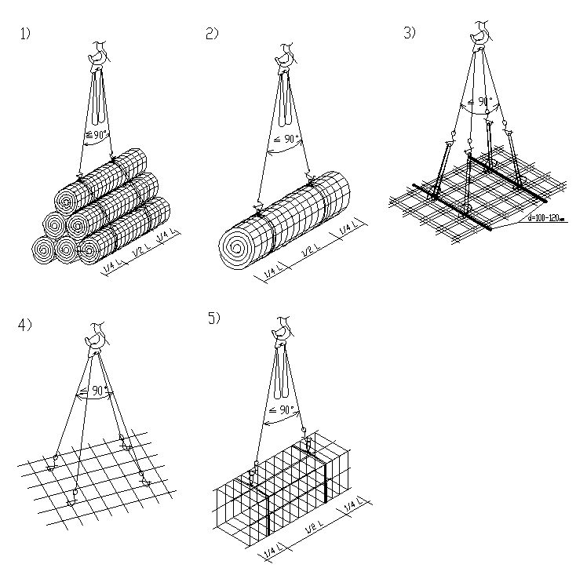
1 - греющий провод; 2 - соединение греющего провода с коммутационным; 3 - коммутационные провода; 4 - арматура; а - шаг между ветвями греющего провода
Рисунок Е.1 - Схема раскладки греющего провода при возведении стены
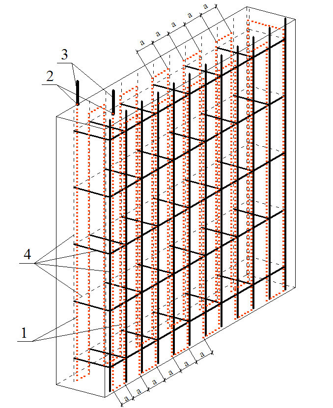
1 - арматура; 2 - греющий провод, установленный по сторонам каркаса; 3 - выпуски греющего провода для подключения к коммутационным проводам
Рисунок Е.2 - Схема раскладки греющего провода в балке
1 - фундамент; 2 - арматура; 3 - греющий провод; 4 - выпуски греющего провода для подключения к питающим электрическим проводам (места подключения должны находиться в бетоне)
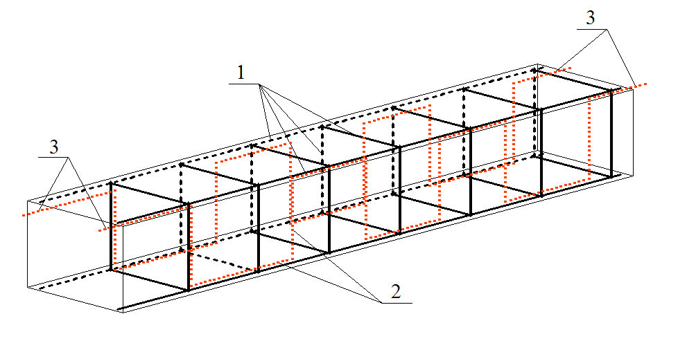
Рисунок Е.3 - Схема установки греющего провода в колонне
Е.9Предварительный электроразогрев бетонных смесей
Сущность данного метода заключается в предварительном (до укладки) разогреве в течение 5-15 мин электрическим током промышленной частоты бетонных смесей, укладке и уплотнении их и последующем выдерживании (обычно методом термоса) бетона.
Электроразогрев бетонной смеси осуществляется циклично и непрерывно. Непрерывный электроразогрев может осуществляться с одновременным воздействием на бетонную смесь вибрации.
Е.10Использование солнечной энергии для интенсификации твердения монолитного бетона
При возведении бетонных и монолитных железобетонных конструкций энергия солнца может быть применена следующими способами: прямой нагрев солнечной радиацией, аккумулирование ее в энергоемких материалах, входящих в состав бетонной смеси или являющихся составной частью гелиотехнического устройства, и др.
Наиболее эффективным устройством, работающим по принципу парникового эффекта, является образование вокруг бетонной конструкции замкнутого пространства в виде ограждения из полимерных пленок. Их можно укладывать на поверхность свежеуложенного бетона монолитных конструкций, дорог, оросительных каналов, аэродромных покрытий, площадок промышленных предприятий и т. д.